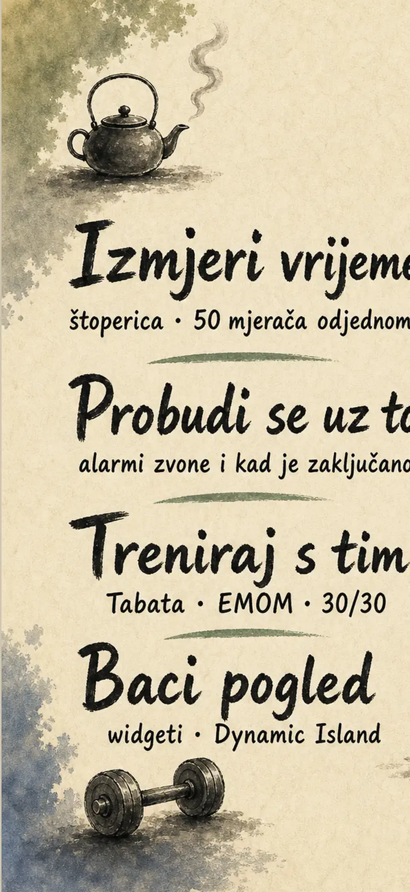
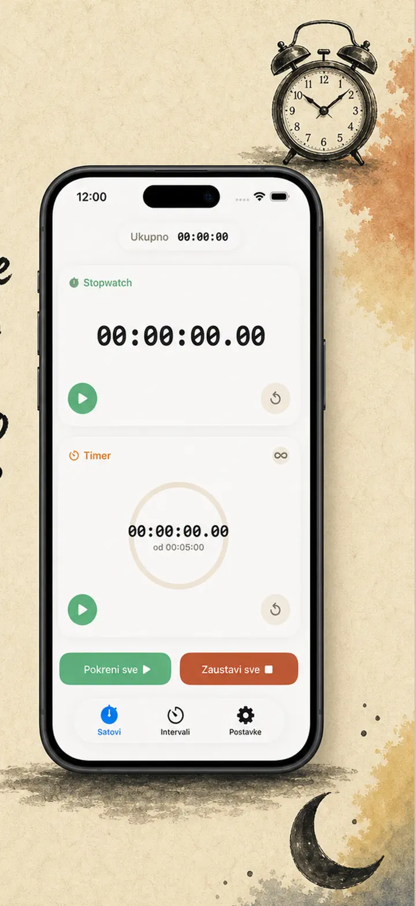
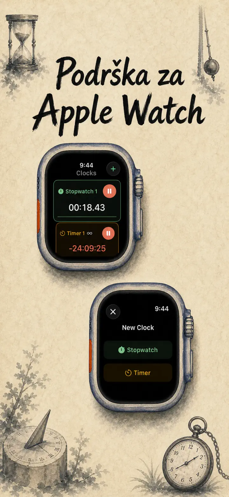
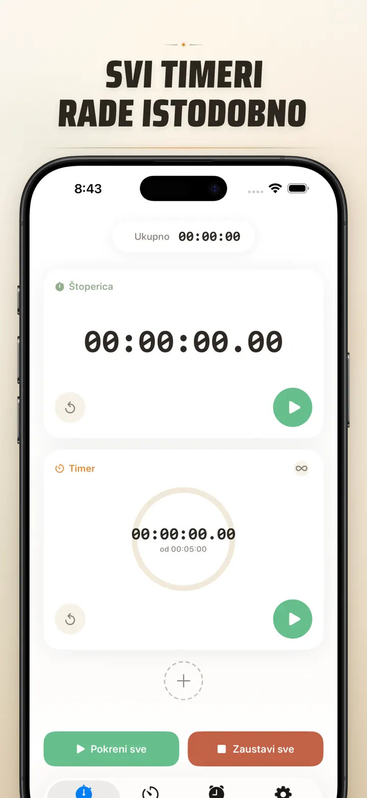
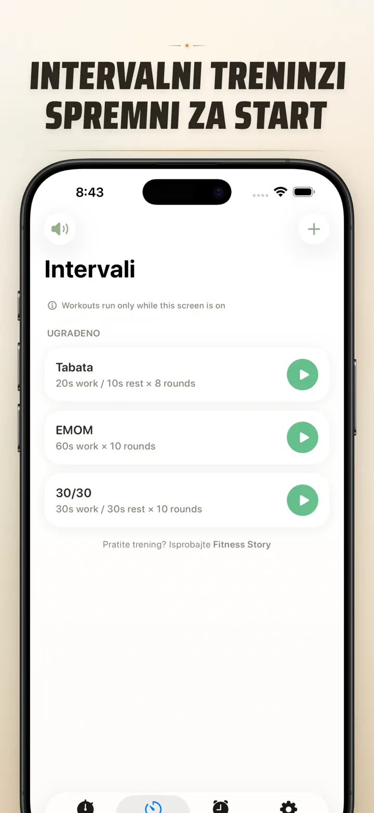
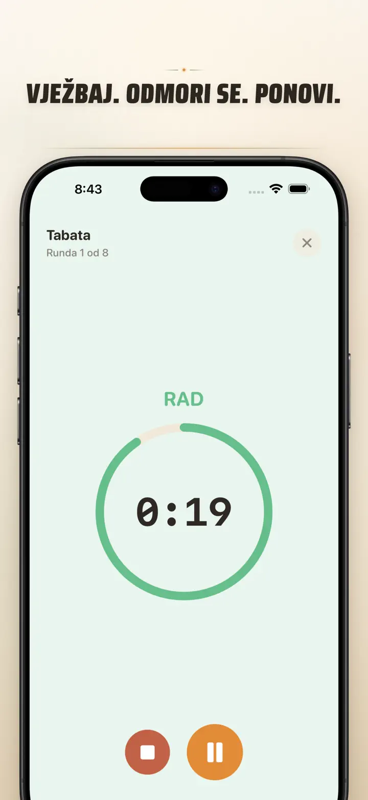
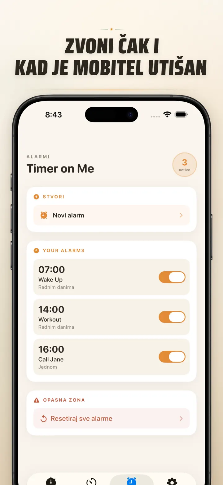

Timer on Me
Tajmer, budilica, HIIT, Tabata
Sada s alarmima s datumom: jednokratni alarm za bilo koji datum i vrijeme, uz ponavljajuće alarme, 50 tajmera odjednom, HIIT & Tabata i Apple Watch.
Preuzmi na App Storeu
O aplikaciji
Timer on Me je tvoj multi-tajmer i štoperica za iPhone, iPad i Apple Watch. Do 50 neovisnih tajmera istovremeno, precizni intervalni treninzi i alarmi koji stvarno zvone — čak i kad je iPhone zaključan ili aplikacija zatvorena.
ALARMI
- Budilice i podsjetnici s vlastitim nazivima i rasporedima po danima u tjednu
- Pokreće ih AlarmKit — zvone i kad je iPhone zaključan ili Timer on Me zatvoren
- Podesivo drijemanje (3 / 5 / 9 / 15 / 30 minuta) ili bez drijemanja
- Biraj između ugrađenih zvonjenja ili uvezi vlastite zvukove
- Uključi/isključi jednim dodirom u namjenskoj kartici Alarmi
TRENING I INTERVALI
- Gotovi preseti Tabata, EMOM i 30/30 — dva dodira i kreni
- Vlastiti editor intervala: rad, odmor i runde u minutama i sekundama
- Cijelozaslonski način treninga s promjenom boje po fazi i tihom opcijom
- Pauza, preskakanje i nastavak usred sesije bez gubitka napretka
APPLE WATCH
- Prava nativna watchOS aplikacija, ne samo zrcaljenje s telefona
- Više štoperica i tajmera na zapešću istovremeno
- Štoperica s preciznošću na stotinke sekunde
- Vlastite komplikacije brojčanika za pokretanje jednim dodirom
- Radi samostalno, čak i bez iPhonea u blizini
50 TAJMERA ISTOVREMENO
- Do 50 neovisnih tajmera i štoperica u jednoj sesiji
- Pokreni, zaustavi i resetiraj pojedinačno ili u grupama
- Automatsko ponavljanje za cikličke runde
- Tajmeri nastavljaju računati nakon nule za praćenje prekovremenog vremena
- Šarene trake napretka: žuta na 50 %, crvena na 10 %
- Povuci za redoslijed, daj vlastita imena
POUZDANA UPOZORENJA
- AlarmKit: alarmi zvone i kad je iPhone zaključan ili aplikacija zatvorena
- Dynamic Island i Live Activity — napredak na prvi pogled
- Widgeti za početni zaslon: mali, srednji, veliki
- Ugrađeni zvukovi: zvona, ptičja pjesma, vintage telefoni
- Dodirni za preslušavanje prije odabira
- Način „Održi zaslon upaljenim" za duge sesije
PRILAGODI I PODIJELI
- Prikaži ili sakrij decimale, zbrojeve i postotke
- Spremi i prepiši presete, vrati ih jednim dodirom
- Izvozi kao CSV, JSON ili obični tekst
- Podijeli s kolegama, učenicima ili trenerom
ZA iPhone, iPad I APPLE WATCH
- Raspored prilagodljiv svakoj veličini zaslona
- Split View na iPadu
- 34 jezika
IDEALNO ZA
- HIIT, Tabatu, CrossFit i kružni trening
- Runde boksa, kickboxa i borilačkih sportova
- Pomodoro, matura, prijemni i učenje
- Kuhanje kave, čaja, jaja, sarme, ajvara i pečenja u pećnici
- Jogu, pilates, meditaciju i vježbe disanja
- Probe prezentacija i vježbanje instrumenta
- Nastavu, radionice i grupne aktivnosti
- Društvene igre i druženja s prijateljima
Preuzmi Timer on Me i preuzmi kontrolu nad svakom minutom — u teretani, na poslu ili kod kuće.
Pravila privatnosti: https://masawata.net/privacy-policy.html Uvjeti korištenja: https://www.apple.com/legal/internet-services/itunes/dev/stdeula/
Snimke zaslona






Timer on Me
Sada s alarmima s datumom: jednokratni alarm za bilo koji datum i vrijeme, uz ponavljajuće alarme, 50 tajmera odjednom, HIIT & Tabata i Apple Watch.
Preuzmi na App Storeu